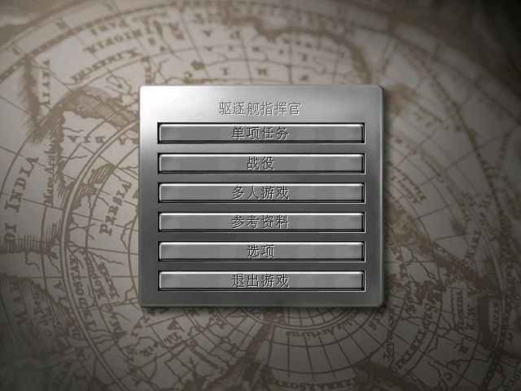
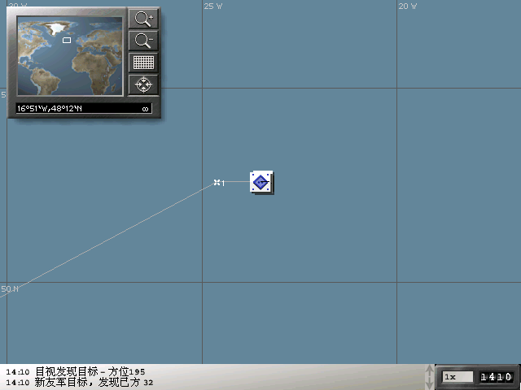
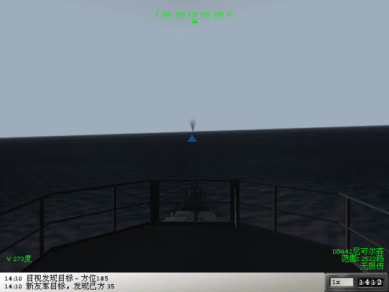

名稱：驅逐艦指揮官 (Destroyer Command: WWII Naval Combat Simulator，簡中／英文版) 簡介：Ubisoft 2002年出品的驅逐艦指揮作戰模擬遊戲 [待補]。


保護：無 備註：簡中版為1.1版 備註：非安裝移機者，須設定下列Registry（假設安裝目錄為C:\DestCmd）： [HKEY_LOCAL_MACHINE\SOFTWARE\WOW6432Node\Ultimation\DestroyerCmd] "Directory"="C:\\DestCmd" "Installation"="Full" "Language"="English" 備註：VirtualBox、VMware+XP均無法正常執行，建議在Win64系統執行。若要搭配dgVoodoo2， 需同時放入Configure、Shell、Sim等三個子目錄裡。 檔案：DestroyerCommand_Patch_v1.1.rar = 英文1.1更新檔